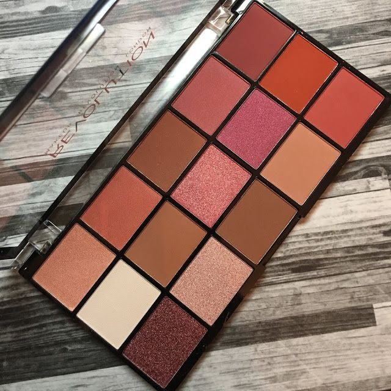
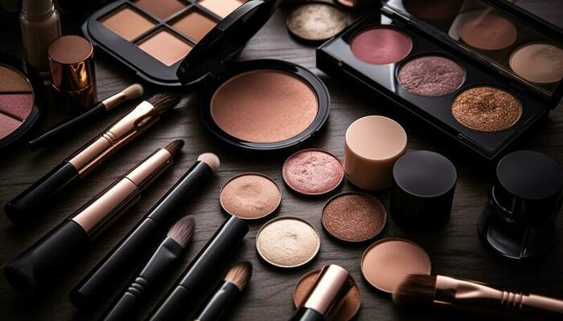
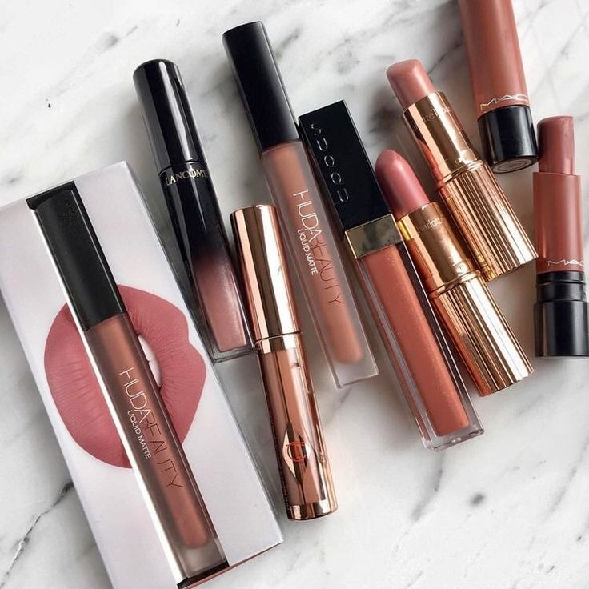

Rich metallic shades like gold, bronze, and copper highlight dark
skin beautifully. Bold colors such as cobalt blue and emerald green add vibrancy and elegance.

Deep blush shades like burgundy, terracotta, and wine bring a
natural glow to dark skin, while golden highlighters enhance the warmth of the complexion.

Bold lip colors such as plum, berry, and deep red look stunning
on dark skin tones, adding a royal and confident touch to the makeup look.